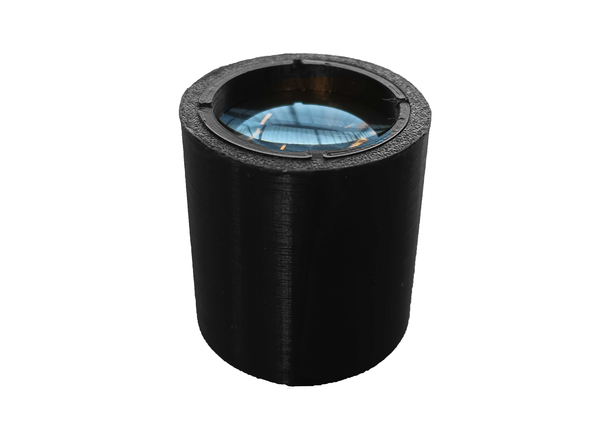
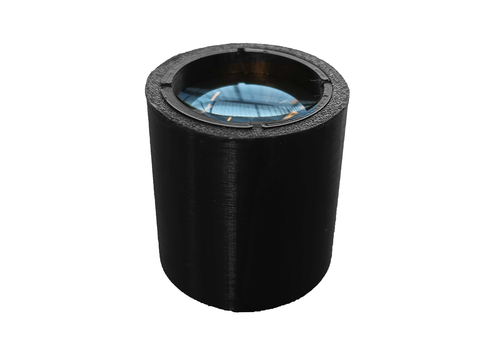
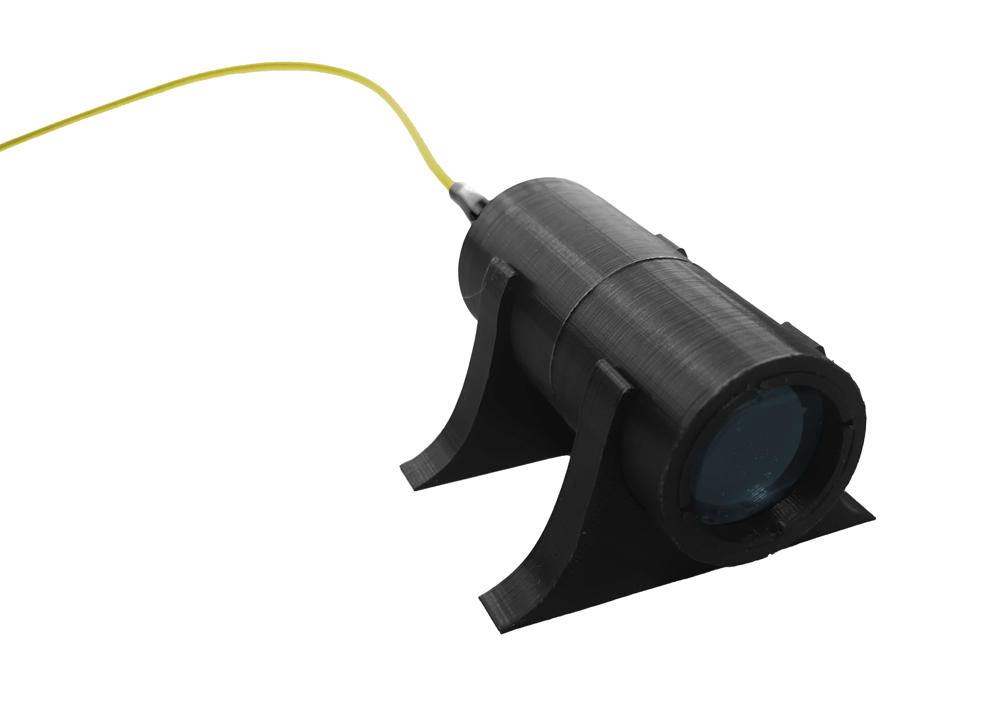

Módulo óptico
Cuidado Utilizar guantes de nitrilo para la manipulación de todas las piezas del módulo óptico. Tener especial cuidado con los lentes y la fibra láser.
Step 1: Lente óptico
Calzar anillo interno 1 en herramienta OP. Luego, introducir en tubo óptico y girar hasta una profundidad de 6mm.


Insertar lente en tubo óptico.


Calzar anillo interno 2 en herramienta OP, introducir en tubo óptico y girar hasta el tope.
 

Step 2: Tubos ópticos
Para este paso, debe disponer del tubo óptico con su lente acoplado, ensamblado en el paso anterior.
Calzar ambos tubos y girar hasta el final.


Step 3: Base
Para este paso, debe disponer del tubo óptico extendido, ensamblado en el paso anterior.
Poner abrazaderas en superficie horizontal a una distancia de 25 mm entre ambas partes. Luego, ensamblar tubo óptico a ambas abrazaderas presionando hacia abajo.
Step 4: Adaptador de fibra láser
Para este paso, debe disponer del tubo óptico extendido con las abrazaderas, ensamblado en el paso anterior.
Calzar adaptador de fibra láser y girar hasta el final.


Retirar tapa de láser, ensamblar láser con adaptador de fibra láser y girar adaptador láser hasta el final.
Cuidado No tocar fibra óptica. Manipular componentes como se muestra en las imágenes.


El ensamblaje debe verse como en la imagen inferior.

Step 5: Difusor
Calzar difusor en herramienta OP e introducir en tubo óptico. Girar hasta el final del tubo.